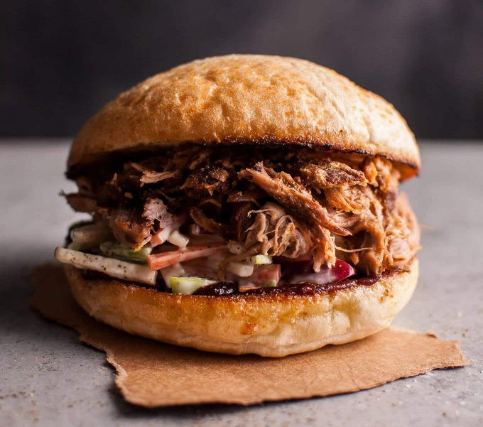

Pulled Pork Sandwich

An easy recipe for a delicious sandwich!
With a small bit of prep work, you can have a delicious meal or snack for every day of the week.
Ingredients
- 3 tbsp brown sugar
- 3 tbsp paprika
- 1 tbsp garlic powder
- 2 tbsp of salt/pepper
- 1/2 cup dijon mustard
- 2-8lbs of pork shoulder roast
- 1/2 cup barbeque sauce
- 4-16 hamburger buns
Steps
- To start, we preheat the oven to 250 degrees F (120 degrees C).
- Next we mix brown sugar, paprika, garlic powder, black pepper, and salt in a bowl.
- Spread mustard over pork roast and sprinkle with brown sugar mixture, using the entire amount.
- Next we line a shallow baking dish with aluminum foil. Place a rack in the baking dish and arrange pork roast on rack.
- Allow pork to bake in the preheated oven until very tender, 9 to 11 hours. Let pork cool, then shred into bite-size pieces.
- Stir barbeque sauce into pork to moisten; serve with hamburger buns and whatever other toppings are desired.